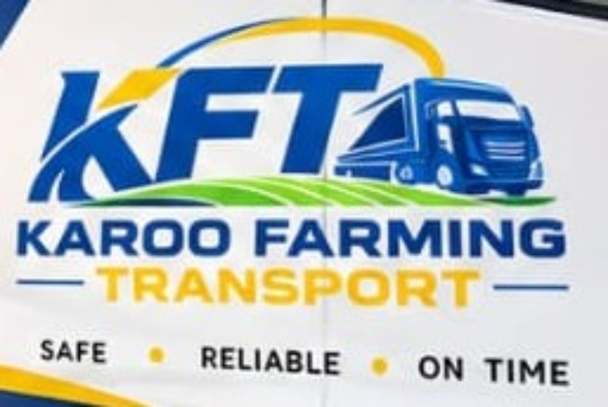

General Cargo & Retail Stock
Transport for retail stock, merchandise, packaged goods and general cargo. We support local and long-distance deliveries across South Africa.
Request this service ↗
KAROO FARMINGTRANSPORTFlexible transport solutions for commercial, agricultural and personal cargo.
Tell us what you're moving and where it needs to go. We'll discuss the best available transport option for your requirements.
Transport for retail stock, merchandise, packaged goods and general cargo. We support local and long-distance deliveries across South Africa.
Request this service ↗Transport for household and office furniture, equipment and relocation loads. Share item sizes, collection details and destination when requesting a quote.
Request this service ↗Move bricks, timber, steel, hardware and other construction materials to residential, commercial and construction sites.
Request this service ↗Transport food products, groceries and perishable goods. Contact us to discuss the cargo type, handling requirements and delivery schedule.
Request this service ↗Transport farm produce, livestock feed, agricultural equipment and machinery to support farming and agribusiness operations.
Request this service ↗Tri-axle transport options for heavy machinery, industrial equipment, containers and bulk cargo. Load dimensions and weight help us assess the right vehicle.
Request this service ↗Our team is available for enquiries and bookings 24/7.